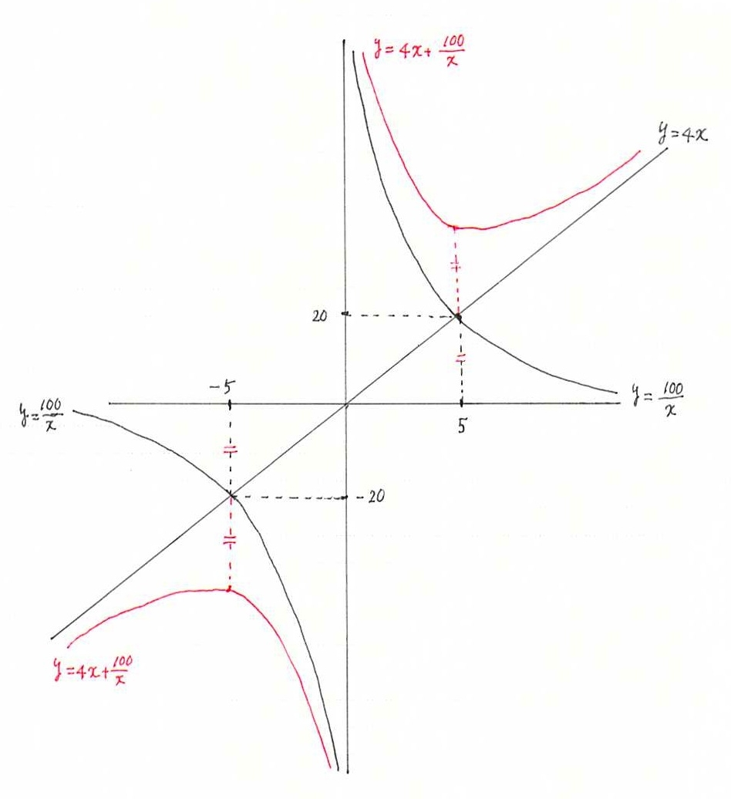

経済学で出る数学
ワークブックでじっくり攻める：問5.24(4)解答例
【解答 問5.24(4)】
- $f(x)=4x+\dfrac{100}{x}$．
- $f^{\prime}(x)
=\dfrac{4(x+5)(x-5)}{x^2}$．（微分の詳細な計算過程は問5.20(2)）
- $1$階条件 $0=f^{\prime}(x)=\dfrac{4(x+5)(x-5)}{x^2}$．したがって，$x=-5, 5$．（分子が $0$ になるときのみ．分母がゼロになる $x=0$ は $1$階条件は満たさない．ここ大事．）
- 下の増減表から，$x=-5$ のとき極大値 $f(-5)=-40$，
$x=5$ のとき極小値 $f(5)=40$ となる．
$
\begin{array}{c|c|c|c|c|c|c|c}
x & \hspace{20mm}& \quad -5 \quad &\hspace{20mm}&0&\hspace{20mm}& \quad 5 \quad &\hspace{20mm} \\\hline
f^{\prime}(x)&+&0&-&\dfrac{＃}{0}&-&0&+\\ \hline
f(x)&\nearrow&極大&\searrow&\dfrac{＃}{0}&\searrow&極小&\nearrow \\\hline\hline
\end{array}
$
【問5.24(4)終わり】
【メモ】
導関数の分母がゼロになる点は，$1$ 階条件を満たす点ではないが，$\dfrac{＃}{0}$ の形になるので，「不能」とよばれる，不連続点．増減表を描く際には注意が必要．参考までに，グラフは下図．

【メモ終わり】
解答例一覧へ